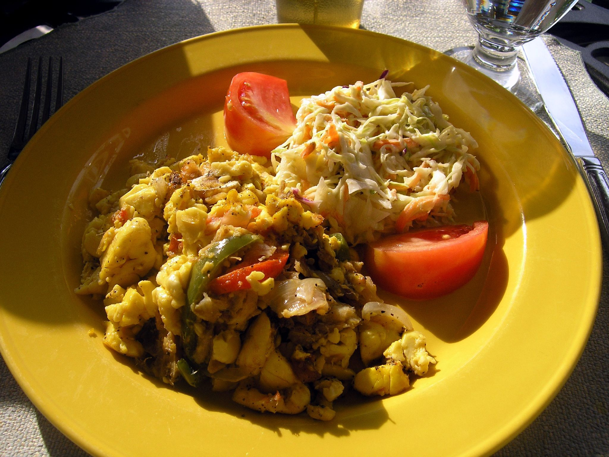

Ackee and Saltfish

What is Ackee and Saltfish?
Ackee and Saltfish is the national dish of the Caribbean island Jamaica and the ackee fruit is also native to the country. It is a homage to cultural and national identities and is a culinary depiction of the Jamaican people. It can be eaten as a main dish for breakfast, lunch or dinner and with your choice of side such as white rice, bread, johnny cakes/fried dumplings etc.
Ingredients
Approximate cook time is 40 mins.
- 2 dozen Ackee
- 1 lb Salt Fish
- Scotch Bonnet Pepper or Pepper of Your Choice
- Salt
- Onion
- Green Onion/Escallion
- Pimento
- Garlic
- 2 teaspoons olive oil
Steps
- Remove ackee from pod if not already done so.
- Remove the seed and the inside of the ackee fruit carefully
- Once the ackee is removed, rinse with plain water.
- Add the ackee to a pot of hot water and bring to a boil for 15 mins.
- While the ackee is boiling, rinse the saltfish in water to get rid of excessive salt.
- Add the salt fish to a pot of hot water and bring to a boil for 15 mins
- Once the ackee and the saltfish have both been boiled to a tender consistency, remove from heat and drain.
- Rinse saltfish in room temp water and remove the bones from the fish while breaking the fish into small pieces.
- Add 2 teaspoons of olive to heated pot.
- Add chopped spices to oil and stir for 2 mins until tender and fragrant
- Add ackee and saltfish pieces to the pot and stir for 2 mins.
- Let it simmer on medium heat for 6 mins.
- Once the ackee and saltfish is cooked thoroughly, turn off stove.
- Serve hot with a side of your choice and enjoy!